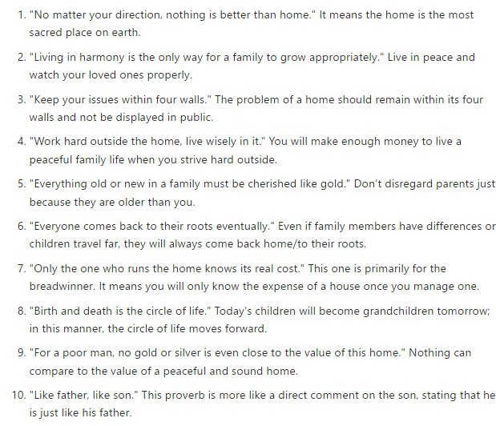
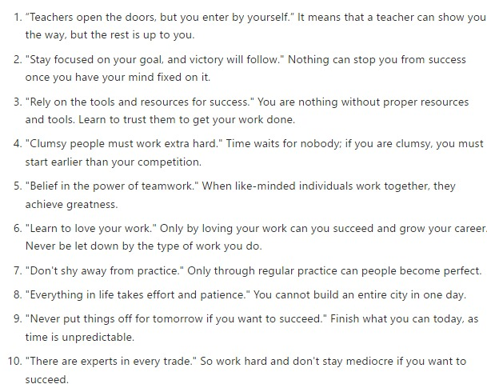
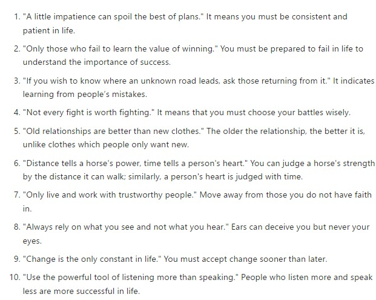
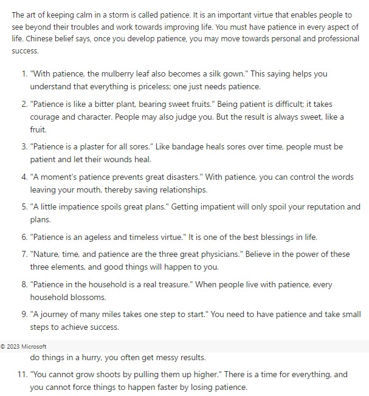
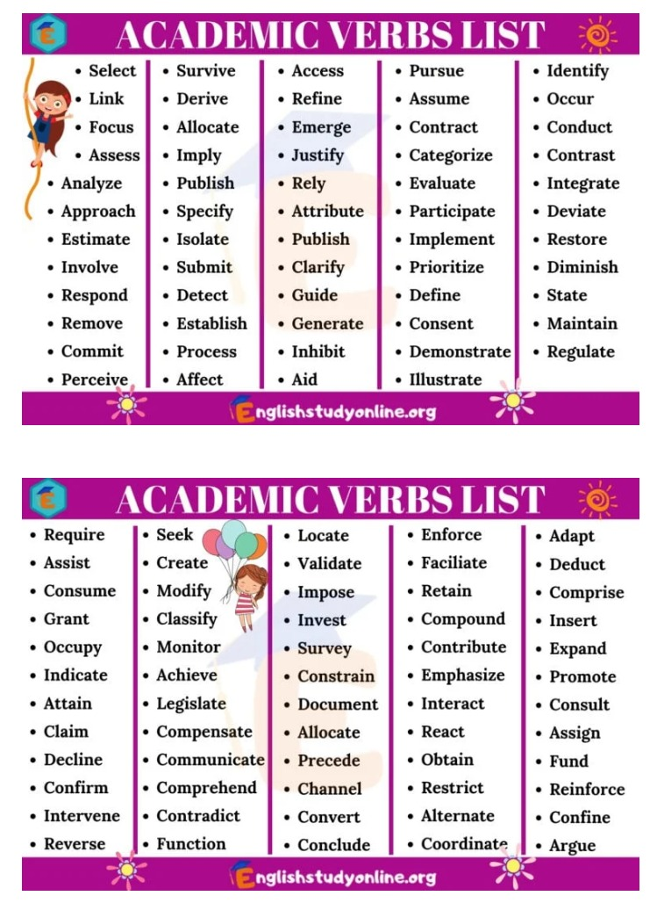
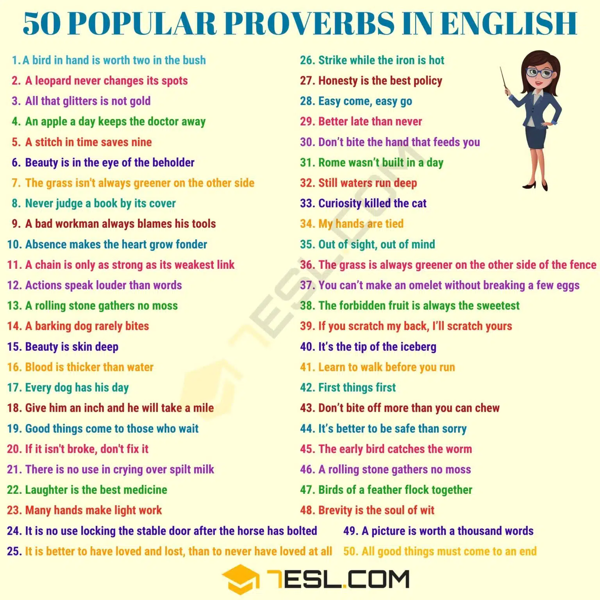
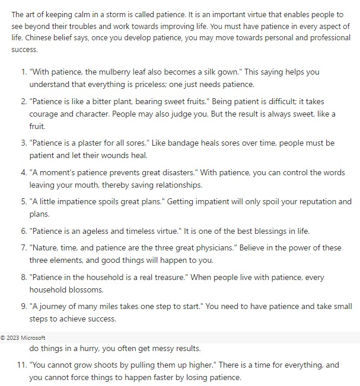
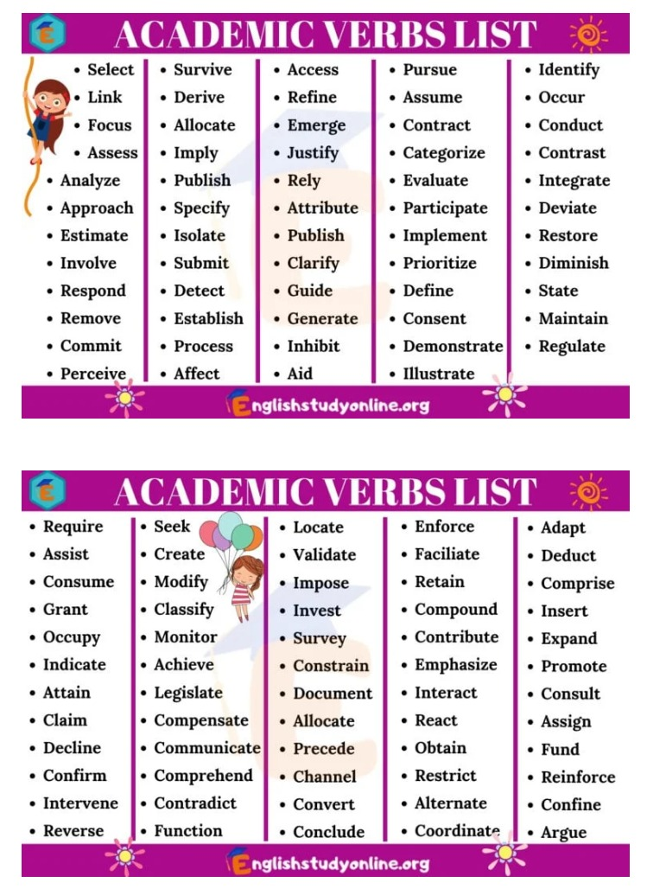
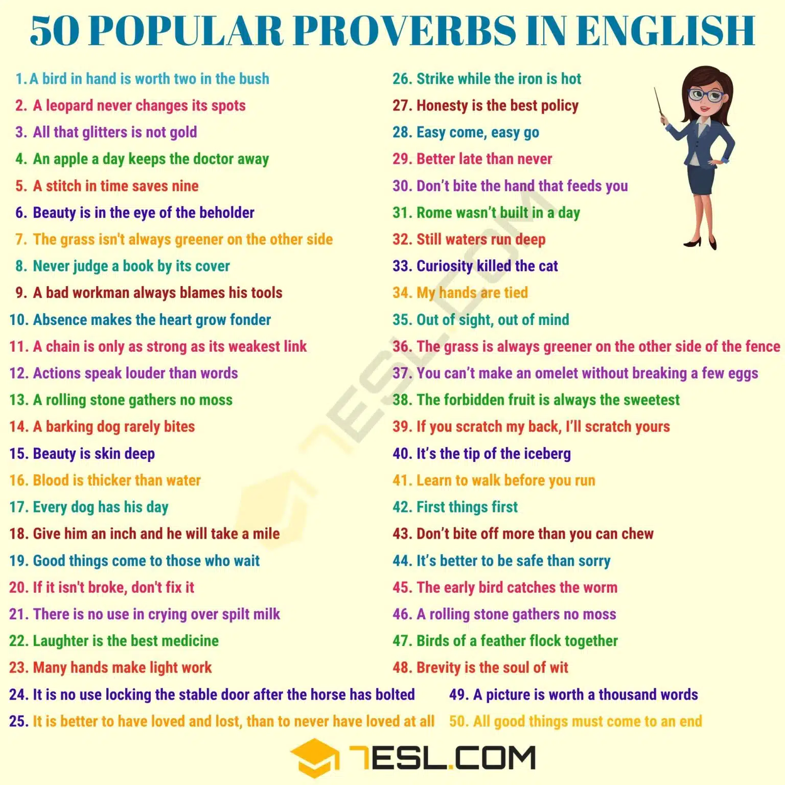

English Words
Norman english
Vocabulary
-
Curveballs : something which is unexpected, surprising,
or disruptive. Example: "there's always a curveball on every mission"
-
Evince : reveal the presence (of quality or feeling),
indicate. Example: "the news stories evinced the usual mixture of
sympathy and satisfaction"
-
Expedition : a journey undertaken by a group of people
with a particular purpose, especially that of exploration, research, or
war. Example:
"an expedition to the jungles of the Orinoco"
-
Contiguous : sharing a common border; touching.
Example: "the Southern Ocean is contiguous with the Atlantic"
-
Sew up : bring something to a favourable conclusion.
Example: "they had the match sewn up by half-time"
-
Tipping point : A tipping point is the critical point
in a situation where smaller incidents lead to a much larger,
unstoppable change. Example: "Everybody has at least one tipping point
in their life."
-
Mainspring : the main agent of motivation. Example:
"innovation is the mainspring of the new economy"
-
Perk up : Become or make more cheerful and lively
especially they have been ill or sad. Example: "He soon perked up when
his friends arrived"
-
Rummage :search unsystematically and untidily through
something. Example: "he rummaged in his pocket for a handkerchief"
-
Lead in : to persevere in spite of risk or difficulty. to actively accept challenges and seek more responsibility, especially in order to progress in your career. Example: "She advises young women to lean in in order to move up the hierarchy".
-
Fervour :intense and passionate feeling.
Example: "he talked with all the fervour of a new convert".
-
Concur :be of the same opinion; agree; happen or occur at the same time; coincide.
Examples: "the authors concurred with the majority". "in tests, cytogenetic determination has been found to concur with enzymatic determination"
-
Antinomy :a contradiction between two beliefs or conclusions that are in themselves reasonable; a paradox.
Examples: "there are not many short novels capable of accommodating bewildering antinomies"
-
Antithesis :a person or thing that is the direct opposite of someone or something else.
Examples: "love is the antithesis of selfishness"
-
Finicky : Attention to detail. Syn. Fastidious, meticulous, fussy
Examples: "People are so finicky on their work that they could not remember anything"
Proverbs
-
Through thick and thin : under all circumstances, no
matter how difficult. Example: "they stuck together through thick and
thin"
-
As thick as thieves: (of two or more people) very close or friendly; sharing secrets.
Example: "he and Auntie Lou were as thick as thieves"
-
As fit as fiddle: healthy and strong.
Example: "I am feeling as fit as fiddle these days"
-
Finding ones feet: become confident or successful in a particular field or activity.
Example: "it was in Germany that Kennedy found his feet as a performer"



 




